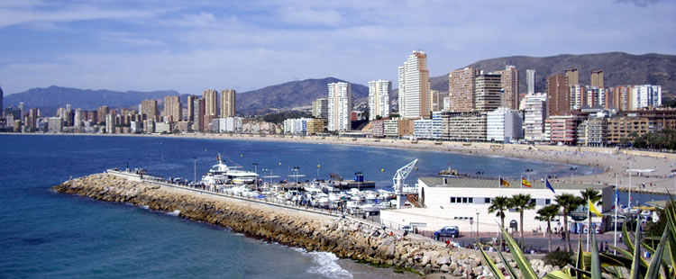
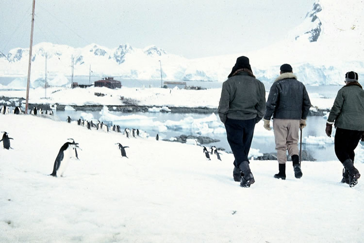

Chile: Un mundo de contrastes sorprendentes
Santiago: La ciudad-jardín
Hay quienes piensan que el conquistador Pedro de Valdivia se equivocó de lugar cuando en 1541 decidió fundar la ciudad que más tarde sería la capital de Chile: Santiago de la Nueva Extremadura. Esta opinión se renueva cada año cuando llega el otoño y se acentúa en el invierno. En ambas estaciones Santiago, que está situado en un valle, sufre los efectos del progreso urbano que se traduce en una contaminación atmosférica. Esta contaminación dificulta que los turistas puedan visualizar lo que casi siempre es evidente en la primavera y el verano: el cielo azul, los verdes cerros que rodean Santiago y el enorme y blanco telón de fondo que constituye la cordillera de los Andes.
Fundada el 22 de febrero de 1541 por el ya mencionado capitán de Valdivia, Santiago se caracteriza por ser la ciudad más poblada de Chile. Concentra casi el 40 por ciento de los habitantes del país, al ser un constante foco de atracción de migraciones rurales. Miles de trabajadores del campo y de las ciudades más pequeñas emigran anualmente a Santiago en busca de trabajo.
Santiago, o mejor dicho, la Región Metropolitana, reúne las mejores condiciones para el desarrollo industrial: gran concentración de población, personal calificado, recursos naturales suficientes, buenas vías de acceso y suficiente agua y energía. Es aquí donde se elabora prácticamente el 50 por ciento de toda la producción nacional. Las principales industrias manufactureras son las textiles, las prendas de vestir, industria del cuero, fábricas de productos metálicos, maquinarias y equipos, productos alimenticios, bebidas y tabacos, industrias de madera y sus productos derivados.
Santiago tiene modernos sistemas de transporte y comunicaciones. Desde el centro de la ciudad, se desprende la Carretera Panamericana. Una ruta internacional conecta la capital con la Argentina y hay también otras carreteras y vías que la unen con todo el país. Paralela a los caminos se extiende una red ferroviaria; el aeropuerto internacional recibe pasajeros y carga del exterior.
Uno de los principales atractivos turísticos de Santiago es el llamado Parque Metropolitano situado en el cerro San Cristóbal, mole de piedra y tierra de más de 300 metros de altura. Allí se encuentran sitios para picnic, un jardín zoológico, piscinas al aire libre y salas de concierto. Para los amantes* de la naturaleza y los paseos hay muchas posibilidades, desde las canchas de esquí hasta las aguas termales, los ríos para hacer canotaje, valles y bosques para acampar sin más temor que el silencio y sin más ruido que el de los riachuelos y los pájaros.
Viña del Mar
La vida se inicia tarde en Viña del Mar. La gente comienza a salir de sus casas hacia las once y media de la mañana, pero antes los más deportistas, como en todo centro de veraneo, han salido a trotar, a andar en bicicleta o, simplemente, a caminar por las costaneras o por la gran avenida que accede a todas las playas del litoral. Reñaca, con dos kilómetros de extensión, es la playa favorita de la juventud y el más importante centro de actividades del verano.
Las vacaciones invitan a comer fuera de casa, jugar, bailar. Viña del Mar lo ofrece todo. Las marisquerías alternan con los restaurantes en los treinta kilómetros del camino costero. El Casino Municipal es el centro de esparcimiento más completo de la ciudad. Sus salas atraen a jugadores de ruleta y de tragamonedas; en su café concert durante todo el año se presentan figuras internacionales de la canción y del espectáculo. La juventud tiene otras preferencias. Los últimos ritmos europeos se unen al rock latino en las discotecas de la región. Viña del Mar también ofrece una intensa vida cultural con teatro, conciertos, exposiciones y concursos de pintura y escultura.
Magallanes
La geografía y el clima de Chile ofrecen grandes y sorprendentes contrastes. En el norte está el desierto de Atacama, el territorio más seco del mundo, mientras al otro extremo del país todo es nieve.
La región de Magallanes y la Antártida chilena están situadas en el sur entre la Argentina y el océano Pacífico. Aunque Magallanes es la región de mayor superficie del país es la menos poblada, con solamente 130.000 habitantes. Este territorio extenso y variado es sumamente hermoso. El paisaje casi siempre incluye glaciares, icebergs, fiordos o islas con canales sinuosos. Allí la cordillera de los Andes está sumergida en el mar de Drake, pero reaparece más al sur en la Antártida.
Además de ser una de las regiones más bellas del país, también es una de las más ricas en recursos naturales. La economía depende de la industrialización de los recursos mineros, ganaderos, marinos y forestales.
Magallanes también ofrece muchas atracciones turísticas; los visitantes pueden gozar de una gastronomía sabrosa, la práctica deportiva y las costumbres tradicionales, al mismo tiempo que viajan por una región vasta e impresionante.